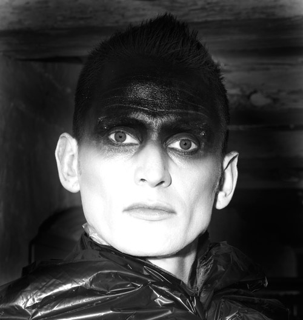
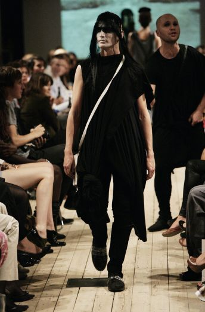
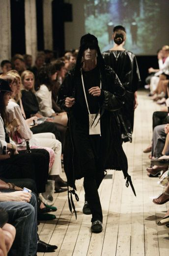
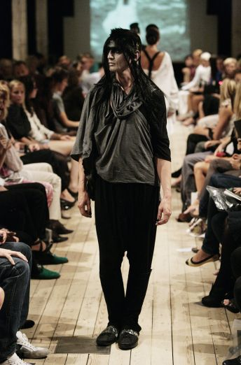
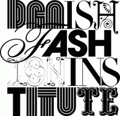

Copenhagen Fashion Week, Nordatlantens Brygge, København.
09/08 - 2008.

Photo: Karina Jønson -
Dennis Agerblad går model for den færøske designer
bARBARA i gONGINI.
Sangeren Budam synger i baggrunden.



